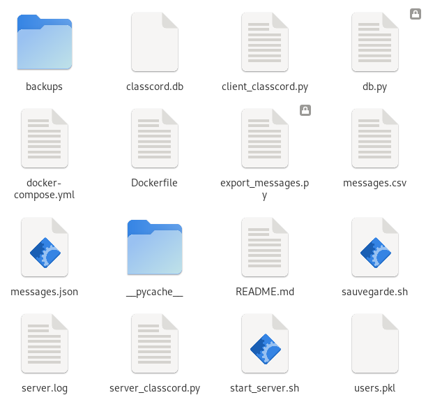
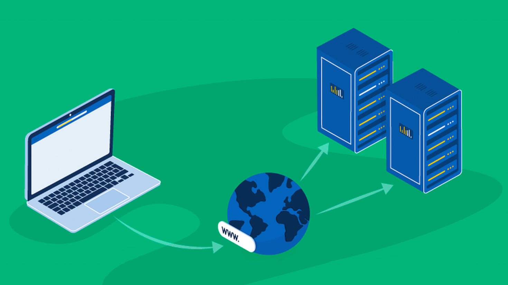
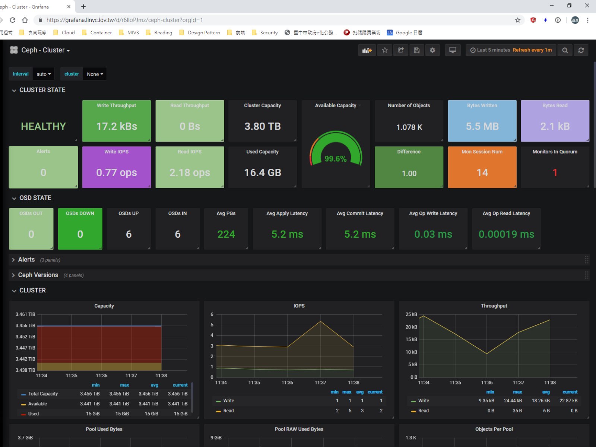
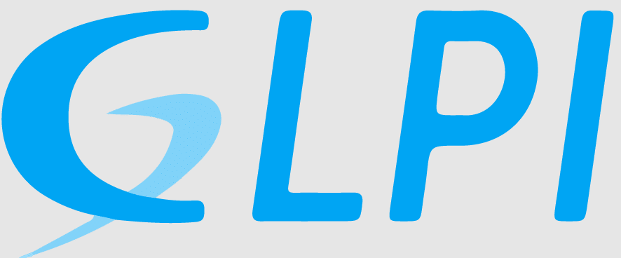
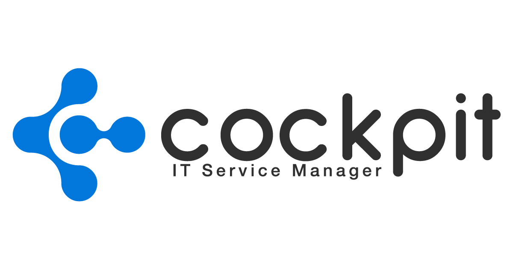

Windows Server
Déploiement d'une infrastructure Windows Server complète : AD DS, DNS, DHCP, GPO, serveur de fichiers et automatisations PowerShell.

ClassCord Server
Serveur de tchat multi-clients en Python, déployé, sécurisé et supervisé sous Linux, avec accès réseau pour les clients SLAM.

Serveur DHCP / DNS
Mise en place de DHCP et DNS sur Debian avec isc-dhcp-server et bind9, incluant zones de résolution directe et inverse.

Monitoring
Stack complète de supervision temps réel pour surveiller la santé des serveurs avec tableaux de bord Grafana.

GLPI
Déploiement de GLPI pour la gestion de parc informatique et tickets d'incidents, avec sécurisation SSH par clés RSA.

Gestion Utilisateurs & Fichiers
Déploiement d'un serveur complet avec Cockpit pour l'administration web et Nextcloud via Docker pour le stockage collaboratif.
Infrastructure Réseau — Établissement ELEVEN
Conception et déploiement d'une infrastructure réseau complète pour un établissement hôtelier multi-bâtiments (Hôtel, SPA & Gym, Restaurant) avec segmentation VLAN, routage RIP v2 et sécurisation des équipements Cisco.
CinéZone
Portail web de consultation de films utilisant l'API TMDB, avec recherche, filtres et gestion des favoris en localStorage.
RP-02 — Active Directory IRIS
Déploiement d'un Active Directory Domain Services complet sur Windows Server 2022 pour l'école IRIS Nice : gestion centralisée des identités, GPO ANSSI, PowerShell et authentification 802.1X.
RP-03 — Supervision, Monitoring & Logs
Déploiement d'une stack LGP (Loki + Grafana + Prometheus), Nextcloud Hub avec authentification LDAP/AD, reverse proxy Traefik HTTPS et centralisation des logs syslog Cisco — rétention 12 mois LCEN.